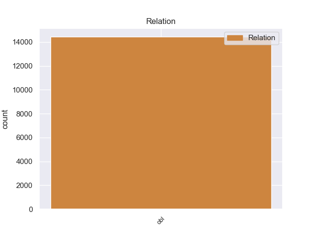
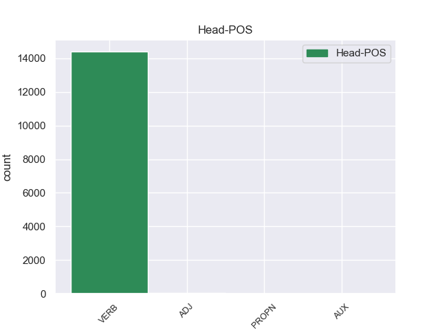
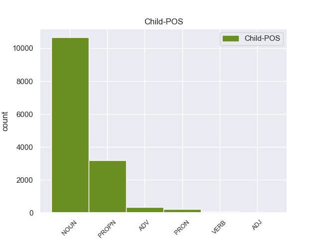

Distribution of features within this leaf



Agreement Rules sorted by frequency.
- When the dependent token is the oblique nominal(obl) of the head token, and the head token is VERB and the dependent token is NOUN.
1 उन्होंने _ _ _ _ 0 _ _ _
2 यहां _ _ _ _ 0 _ _ _
3 वेटिकन _ _ _ _ 0 _ _ _
4 दूतावास _ _ _ _ 0 _ _ _
5 में _ _ _ _ 0 _ _ _
6 एक _ _ _ _ 0 _ _ _
7 शोक _ _ _ _ 0 _ _ _
8 पुस्तिका _ _ _ _ 0 _ _ _
9 पर _ _ _ _ 0 _ _ _
10 हस्ताक्षर _ _ _ _ 0 _ _ _
11 कर _ _ _ _ 0 _ _ _
12 पोप _ _ _ _ 0 _ _ _
13 जॉन _ _ _ _ 0 _ _ _
14 पॉल _ _ _ _ 0 _ _ _
15 द्वितीय _ _ _ _ 0 _ _ _
16 के _ _ _ _ 0 _ _ _
17 निधन निधन NOUN NN Case=Acc|Gender=Masc|Number=Sing|Person=3 22 obl _ ChunkId=NP7|ChunkType=head|Tam=0|Translit=nidhana|Vib=0_पर
18 पर _ _ _ _ 0 _ _ _
19 गहरा _ _ _ _ 0 _ _ _
20 दुख _ _ _ _ 0 _ _ _
21 प्रकट _ _ _ _ 0 _ _ _
22 किया कर VERB VM Aspect=Perf|Gender=Masc|Number=Sing|VerbForm=Part|Voice=Act 0 _ _ _
23 । _ _ _ _ 0 _ _ _
1 उन्होंने _ _ _ _ 0 _ _ _
2 यहां _ _ _ _ 0 _ _ _
3 वेटिकन _ _ _ _ 0 _ _ _
4 दूतावास दूतावास PROPN NNP Case=Acc|Gender=Masc|Number=Sing|Person=3 22 obl _ ChunkId=NP3|ChunkType=head|Tam=0|Translit=dūtāvāsa|Vib=0_में
5 में _ _ _ _ 0 _ _ _
6 एक _ _ _ _ 0 _ _ _
7 शोक _ _ _ _ 0 _ _ _
8 पुस्तिका _ _ _ _ 0 _ _ _
9 पर _ _ _ _ 0 _ _ _
10 हस्ताक्षर _ _ _ _ 0 _ _ _
11 कर _ _ _ _ 0 _ _ _
12 पोप _ _ _ _ 0 _ _ _
13 जॉन _ _ _ _ 0 _ _ _
14 पॉल _ _ _ _ 0 _ _ _
15 द्वितीय _ _ _ _ 0 _ _ _
16 के _ _ _ _ 0 _ _ _
17 निधन _ _ _ _ 0 _ _ _
18 पर _ _ _ _ 0 _ _ _
19 गहरा _ _ _ _ 0 _ _ _
20 दुख _ _ _ _ 0 _ _ _
21 प्रकट _ _ _ _ 0 _ _ _
22 किया कर VERB VM Aspect=Perf|Gender=Masc|Number=Sing|VerbForm=Part|Voice=Act 0 _ _ _
23 । _ _ _ _ 0 _ _ _
1 इस _ _ _ _ 0 _ _ _
2 दौरान दौरान ADV NST AdpType=Post|Case=Nom|Gender=Masc|Number=Sing|Person=3 11 obl _ AltTag=ADV-NOUN|ChunkId=NP|ChunkType=head|Translit=daurāna
3 वे _ _ _ _ 0 _ _ _
4 अफ्रीका _ _ _ _ 0 _ _ _
5 , _ _ _ _ 0 _ _ _
6 मध्य _ _ _ _ 0 _ _ _
7 एशिया _ _ _ _ 0 _ _ _
8 और _ _ _ _ 0 _ _ _
9 मध्य _ _ _ _ 0 _ _ _
10 पूर्व _ _ _ _ 0 _ _ _
11 गए जा VERB VM Aspect=Perf|Gender=Masc|Number=Sing|Person=3|Polite=Form|VerbForm=Part|Voice=Act 0 _ _ _
12 । _ _ _ _ 0 _ _ _
1 उन्होंने _ _ _ _ 0 _ _ _
2 कहा _ _ _ _ 0 _ _ _
3 कि _ _ _ _ 0 _ _ _
4 इसके यह PRON PRP Case=Acc,Gen|Gender=Masc|Number=Sing|Person=3|Poss=Yes|PronType=Prs 18 obl _ ChunkId=NP2|ChunkType=head|Tam=ke|Translit=isake|Vib=0_अलावा
5 अलावा _ _ _ _ 0 _ _ _
6 कृषि _ _ _ _ 0 _ _ _
7 , _ _ _ _ 0 _ _ _
8 वन _ _ _ _ 0 _ _ _
9 एवं _ _ _ _ 0 _ _ _
10 मत्स्य _ _ _ _ 0 _ _ _
11 मंत्री _ _ _ _ 0 _ _ _
12 ताकायोशी _ _ _ _ 0 _ _ _
13 तसुदेना _ _ _ _ 0 _ _ _
14 भी _ _ _ _ 0 _ _ _
15 अगले _ _ _ _ 0 _ _ _
16 साल _ _ _ _ 0 _ _ _
17 भारत _ _ _ _ 0 _ _ _
18 आएंगे आ VERB VM Gender=Masc|Mood=Ind|Number=Sing|Person=3|Polite=Form|Tense=Fut|VerbForm=Fin|Voice=Act 0 _ _ _
19 । _ _ _ _ 0 _ _ _
1 सेना _ _ _ _ 0 _ _ _
2 में _ _ _ _ 0 _ _ _
3 सेवा _ _ _ _ 0 _ _ _
4 शर्तों _ _ _ _ 0 _ _ _
5 को _ _ _ _ 0 _ _ _
6 बढ़ाए _ _ _ _ 0 _ _ _
7 जाने _ _ _ _ 0 _ _ _
8 के _ _ _ _ 0 _ _ _
9 लिए _ _ _ _ 0 _ _ _
10 बग्गा _ _ _ _ 0 _ _ _
11 समिति _ _ _ _ 0 _ _ _
12 की _ _ _ _ 0 _ _ _
13 रिपोर्ट _ _ _ _ 0 _ _ _
14 लागू _ _ _ _ 0 _ _ _
15 किए कर VERB VM Aspect=Perf|Gender=Masc|Number=Sing|VerbForm=Part 23 obl _ ChunkId=VGNN2|ChunkType=head|Tam=yA|Translit=kie|Vib=या_जा+ना_के_संबंध_में
16 जाने _ _ _ _ 0 _ _ _
17 के _ _ _ _ 0 _ _ _
18 संबंध _ _ _ _ 0 _ _ _
19 में _ _ _ _ 0 _ _ _
20 जनरल _ _ _ _ 0 _ _ _
21 विज _ _ _ _ 0 _ _ _
22 ने _ _ _ _ 0 _ _ _
23 कहा कह VERB VM Aspect=Perf|Gender=Masc|Number=Sing|VerbForm=Part|Voice=Act 0 _ _ _
24 कि _ _ _ _ 0 _ _ _
25 नए _ _ _ _ 0 _ _ _
26 रक्षा _ _ _ _ 0 _ _ _
27 मंत्री _ _ _ _ 0 _ _ _
28 को _ _ _ _ 0 _ _ _
29 इस _ _ _ _ 0 _ _ _
30 सिफारिश _ _ _ _ 0 _ _ _
31 के _ _ _ _ 0 _ _ _
32 बारे _ _ _ _ 0 _ _ _
33 में _ _ _ _ 0 _ _ _
34 जानकारी _ _ _ _ 0 _ _ _
35 दे _ _ _ _ 0 _ _ _
36 दी _ _ _ _ 0 _ _ _
37 गई _ _ _ _ 0 _ _ _
38 है _ _ _ _ 0 _ _ _
39 । _ _ _ _ 0 _ _ _
1 इसके _ _ _ _ 0 _ _ _
2 आधे _ _ _ _ 0 _ _ _
3 घंटे _ _ _ _ 0 _ _ _
4 बाद _ _ _ _ 0 _ _ _
5 लगभग _ _ _ _ 0 _ _ _
6 दस _ _ _ _ 0 _ _ _
7 बजे _ _ _ _ 0 _ _ _
8 जवानों _ _ _ _ 0 _ _ _
9 ने _ _ _ _ 0 _ _ _
10 दरवाजा _ _ _ _ 0 _ _ _
11 खोलकर _ _ _ _ 0 _ _ _
12 स्टेशन स्टेशन NOUN NN Case=Acc|Gender=Masc|Number=Sing|Person=3 14 obl _ ChunkId=NP6|ChunkType=head|Tam=0|Translit=sṭeśana|Vib=0_पर
13 पर _ _ _ _ 0 _ _ _
14 खड़े खड़ा ADJ JJ Case=Acc|Gender=Masc|Number=Plur 0 _ _ _
15 कार्यकर्ताओं _ _ _ _ 0 _ _ _
16 पर _ _ _ _ 0 _ _ _
17 गोली _ _ _ _ 0 _ _ _
18 चला _ _ _ _ 0 _ _ _
19 दी _ _ _ _ 0 _ _ _
20 । _ _ _ _ 0 _ _ _
1 इसका _ _ _ _ 0 _ _ _
2 उद्देश्य _ _ _ _ 0 _ _ _
3 अमेरिका _ _ _ _ 0 _ _ _
4 की _ _ _ _ 0 _ _ _
5 तानाशाही _ _ _ _ 0 _ _ _
6 के _ _ _ _ 0 _ _ _
7 खिलाफ _ _ _ _ 0 _ _ _
8 एक _ _ _ _ 0 _ _ _
9 मजबूत _ _ _ _ 0 _ _ _
10 विकल्प _ _ _ _ 0 _ _ _
11 तैयार _ _ _ _ 0 _ _ _
12 करना कर VERB VM Gender=Masc|Number=Sing|VerbForm=Inf 13 obl _ ChunkId=VGNN|ChunkType=head|Tam=nA|Translit=karanā|Vib=ना
13 होगा हो AUX VAUX Gender=Masc|Mood=Ind|Number=Sing|Person=3|Tense=Fut|VerbForm=Fin|Voice=Act 0 _ _ _
14 । _ _ _ _ 0 _ _ _
1 कोई _ _ _ _ 0 _ _ _
2 मिट्टी _ _ _ _ 0 _ _ _
3 गूंथ _ _ _ _ 0 _ _ _
4 रहा _ _ _ _ 0 _ _ _
5 है _ _ _ _ 0 _ _ _
6 , _ _ _ _ 0 _ _ _
7 कोई _ _ _ _ 0 _ _ _
8 ताजे ताजा ADJ JJ Case=Acc|Gender=Masc|Number=Plur 9 obl _ ChunkId=JJP|ChunkType=head|Translit=tāje
9 बने बन VERB VM Aspect=Perf|Gender=Masc|Number=Plur|VerbForm=Part 0 _ _ _
10 कुल्हड़ों _ _ _ _ 0 _ _ _
11 को _ _ _ _ 0 _ _ _
12 धूप _ _ _ _ 0 _ _ _
13 में _ _ _ _ 0 _ _ _
14 सुखाने _ _ _ _ 0 _ _ _
15 के _ _ _ _ 0 _ _ _
16 लिए _ _ _ _ 0 _ _ _
17 ले _ _ _ _ 0 _ _ _
18 जा _ _ _ _ 0 _ _ _
19 रहा _ _ _ _ 0 _ _ _
20 है _ _ _ _ 0 _ _ _
21 तो _ _ _ _ 0 _ _ _
22 कोई _ _ _ _ 0 _ _ _
23 सूखे _ _ _ _ 0 _ _ _
24 कुल्हड़ों _ _ _ _ 0 _ _ _
25 को _ _ _ _ 0 _ _ _
26 समेटने _ _ _ _ 0 _ _ _
27 में _ _ _ _ 0 _ _ _
28 जुटा _ _ _ _ 0 _ _ _
29 है _ _ _ _ 0 _ _ _
30 . _ _ _ _ 0 _ _ _
1 ४१ _ _ _ _ 0 _ _ _
2 वर्षीय _ _ _ _ 0 _ _ _
3 सरबजीत _ _ _ _ 0 _ _ _
4 सिंह _ _ _ _ 0 _ _ _
5 के _ _ _ _ 0 _ _ _
6 बारे _ _ _ _ 0 _ _ _
7 में _ _ _ _ 0 _ _ _
8 पाकिस्तान _ _ _ _ 0 _ _ _
9 का _ _ _ _ 0 _ _ _
10 दावा _ _ _ _ 0 _ _ _
11 है _ _ _ _ 0 _ _ _
12 कि _ _ _ _ 0 _ _ _
13 वह _ _ _ _ 0 _ _ _
14 कथित _ _ _ _ 0 _ _ _
15 रूप रूप NOUN NN Case=Acc|Gender=Masc|Number=Sing|Person=3 20 obl _ ChunkId=NP5|ChunkType=head|Tam=0|Translit=rūpa|Vib=0_से
16 से _ _ _ _ 0 _ _ _
17 भारतीय _ _ _ _ 0 _ _ _
18 जासूस _ _ _ _ 0 _ _ _
19 मंजीत _ _ _ _ 0 _ _ _
20 सिंह सिंह PROPN NNP Case=Nom|Gender=Masc|Number=Sing|Person=3 0 _ _ _
21 है _ _ _ _ 0 _ _ _
22 और _ _ _ _ 0 _ _ _
23 उसी _ _ _ _ 0 _ _ _
24 ने _ _ _ _ 0 _ _ _
25 १९९० _ _ _ _ 0 _ _ _
26 में _ _ _ _ 0 _ _ _
27 लाहौर _ _ _ _ 0 _ _ _
28 व _ _ _ _ 0 _ _ _
29 मुल्तान _ _ _ _ 0 _ _ _
30 में _ _ _ _ 0 _ _ _
31 बम _ _ _ _ 0 _ _ _
32 विस्फोट _ _ _ _ 0 _ _ _
33 किए _ _ _ _ 0 _ _ _
34 थे _ _ _ _ 0 _ _ _
35 . _ _ _ _ 0 _ _ _
1 ऐसे _ _ _ _ 0 _ _ _
2 कई _ _ _ _ 0 _ _ _
3 राज्य _ _ _ _ 0 _ _ _
4 हैं _ _ _ _ 0 _ _ _
5 जो _ _ _ _ 0 _ _ _
6 आंध्र _ _ _ _ 0 _ _ _
7 प्रदेश प्रदेश PROPN NNP Case=Acc|Gender=Masc|Number=Sing|Person=3 10 obl _ ChunkId=NP3|ChunkType=head|Tam=0|Translit=pradeśa|Vib=0_से
8 से _ _ _ _ 0 _ _ _
9 ज्यादा _ _ _ _ 0 _ _ _
10 पिछड़े पिछड़ा ADJ JJ Gender=Masc|Number=Plur 0 _ _ _
11 हैं _ _ _ _ 0 _ _ _
12 । _ _ _ _ 0 _ _ _
Disagree Examples:
1 यह _ _ _ _ 0 _ _ _
2 एक _ _ _ _ 0 _ _ _
3 अनूठा _ _ _ _ 0 _ _ _
4 संग्रहालय _ _ _ _ 0 _ _ _
5 है _ _ _ _ 0 _ _ _
6 जो _ _ _ _ 0 _ _ _
7 200 _ _ _ _ 0 _ _ _
8 एकड़ _ _ _ _ 0 _ _ _
9 में _ _ _ _ 0 _ _ _
10 श्यामला _ _ _ _ 0 _ _ _
11 हिल्स हिल PROPN NNP Case=Acc|Gender=Fem|Number=Plur|Person=3 17 obl _ ChunkId=NP5|ChunkType=head|Tam=0|Translit=hilsa|Vib=0_पर
12 पर _ _ _ _ 0 _ _ _
13 बड़ी _ _ _ _ 0 _ _ _
14 झील _ _ _ _ 0 _ _ _
15 के _ _ _ _ 0 _ _ _
16 सामने _ _ _ _ 0 _ _ _
17 फैला फैल VERB VM Aspect=Perf|Gender=Masc|Number=Sing|Person=3|VerbForm=Part|Voice=Act 0 _ _ _
18 है _ _ _ _ 0 _ _ _
19 । _ _ _ _ 0 _ _ _
1 यह _ _ _ _ 0 _ _ _
2 एक _ _ _ _ 0 _ _ _
3 अनूठा _ _ _ _ 0 _ _ _
4 संग्रहालय _ _ _ _ 0 _ _ _
5 है _ _ _ _ 0 _ _ _
6 जो _ _ _ _ 0 _ _ _
7 200 _ _ _ _ 0 _ _ _
8 एकड़ _ _ _ _ 0 _ _ _
9 में _ _ _ _ 0 _ _ _
10 श्यामला _ _ _ _ 0 _ _ _
11 हिल्स _ _ _ _ 0 _ _ _
12 पर _ _ _ _ 0 _ _ _
13 बड़ी _ _ _ _ 0 _ _ _
14 झील झील NOUN NN Case=Acc|Gender=Fem|Number=Sing|Person=3 17 obl _ ChunkId=NP6|ChunkType=head|Tam=0|Translit=jhīla|Vib=0_के_सामने
15 के _ _ _ _ 0 _ _ _
16 सामने _ _ _ _ 0 _ _ _
17 फैला फैल VERB VM Aspect=Perf|Gender=Masc|Number=Sing|Person=3|VerbForm=Part|Voice=Act 0 _ _ _
18 है _ _ _ _ 0 _ _ _
19 । _ _ _ _ 0 _ _ _
1 और _ _ _ _ 0 _ _ _
2 इस _ _ _ _ 0 _ _ _
3 तरह तरह NOUN NN Case=Acc|Gender=Fem|Number=Sing|Person=3 13 obl _ ChunkId=NP|ChunkType=head|Tam=0|Translit=taraha|Vib=0_से
4 से _ _ _ _ 0 _ _ _
5 यह _ _ _ _ 0 _ _ _
6 वस्तुओं _ _ _ _ 0 _ _ _
7 और _ _ _ _ 0 _ _ _
8 परंपराओं _ _ _ _ 0 _ _ _
9 से _ _ _ _ 0 _ _ _
10 जीवंत _ _ _ _ 0 _ _ _
11 रूप _ _ _ _ 0 _ _ _
12 से _ _ _ _ 0 _ _ _
13 जुड़ा जुड़ VERB VM Aspect=Perf|Gender=Masc|Number=Sing|Person=3|VerbForm=Part|Voice=Act 0 _ _ _
14 हुआ _ _ _ _ 0 _ _ _
15 है _ _ _ _ 0 _ _ _
16 । _ _ _ _ 0 _ _ _
1 और _ _ _ _ 0 _ _ _
2 इस _ _ _ _ 0 _ _ _
3 तरह _ _ _ _ 0 _ _ _
4 से _ _ _ _ 0 _ _ _
5 यह _ _ _ _ 0 _ _ _
6 वस्तुओं वस्तु NOUN NN Case=Acc|Gender=Fem|Number=Plur|Person=3 13 obl _ ChunkId=NP3|ChunkType=head|Tam=0|Translit=vastuoṁ|Vib=0
7 और _ _ _ _ 0 _ _ _
8 परंपराओं _ _ _ _ 0 _ _ _
9 से _ _ _ _ 0 _ _ _
10 जीवंत _ _ _ _ 0 _ _ _
11 रूप _ _ _ _ 0 _ _ _
12 से _ _ _ _ 0 _ _ _
13 जुड़ा जुड़ VERB VM Aspect=Perf|Gender=Masc|Number=Sing|Person=3|VerbForm=Part|Voice=Act 0 _ _ _
14 हुआ _ _ _ _ 0 _ _ _
15 है _ _ _ _ 0 _ _ _
16 । _ _ _ _ 0 _ _ _
1 प्राकृतिक _ _ _ _ 0 _ _ _
2 सुंदरता सुंदरता NOUN NN Case=Acc|Gender=Fem|Number=Sing|Person=3 17 obl _ ChunkId=NP|ChunkType=head|Tam=0|Translit=suṁdaratā|Vib=0_के_बीच
3 के _ _ _ _ 0 _ _ _
4 बीच _ _ _ _ 0 _ _ _
5 आप _ _ _ _ 0 _ _ _
6 विभिन्न _ _ _ _ 0 _ _ _
7 प्रकार _ _ _ _ 0 _ _ _
8 के _ _ _ _ 0 _ _ _
9 शाकाहारी _ _ _ _ 0 _ _ _
10 और _ _ _ _ 0 _ _ _
11 माँसाहारी _ _ _ _ 0 _ _ _
12 प्राणियों _ _ _ _ 0 _ _ _
13 को _ _ _ _ 0 _ _ _
14 देखने _ _ _ _ 0 _ _ _
15 का _ _ _ _ 0 _ _ _
16 आनंद _ _ _ _ 0 _ _ _
17 उठा उठा VERB VM Gender=Masc|Number=Sing|Person=2|Polite=Form|Voice=Act 0 _ _ _
18 सकते _ _ _ _ 0 _ _ _
19 हैं _ _ _ _ 0 _ _ _
20 । _ _ _ _ 0 _ _ _